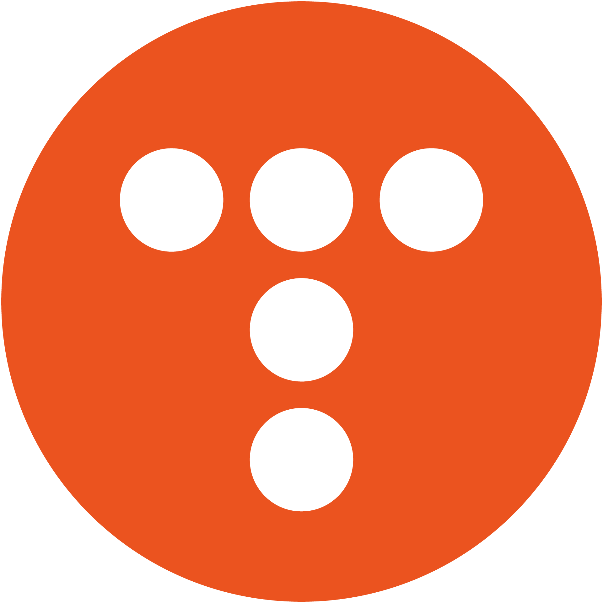
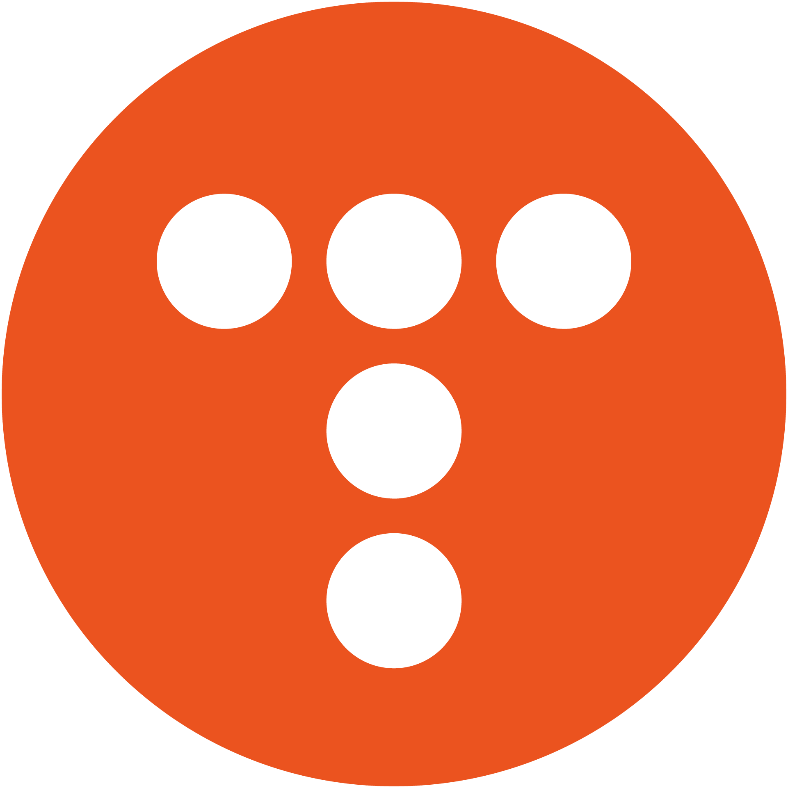

안녕하세요!
프론트엔드 개발자 이채린입니다.
저는 좋은 영향을 미치는 개발자가 되고 싶습니다.
배운 기술을 활용해 사람들에게 실직적인 도움이 되는 서비스를 개발하기 위해 노력하고 있습니다.
 5543705@naver.com
5543705@naver.com
 GitHub
Blog
GitHub
Blog
💻프로젝트
USAN
예기치 못한 비 소식으로 우산을 챙겨 나오지 못한 사람들을 위해 우산을 구매하지 않고 대여할 수 있도록 돕는 서비스입니다.
BUSKING
실시간으로 공연 중인 버스커들의 위치를 알려주고, 관객이 듣고 싶은 노래를 신청할 수 있는 서비스입니다.
🪛기술
HTML
- 웹 표준을 준수하려 노력합니다.
CSS
- 애니메이션 작업을 할 수 있습니다.
- 반응형 웹 디자인을 구현할 수 있습니다.
JavaScript
- ES6 자바스크립트 문법을 사용할 수 있습니다.
- 비동기 처리를 할 수 있습니다.
React
- 상태 관리를 할 수 있습니다.
- API 통신을 할 수 있습니다.
Node.js
- Express.js를 활용할 수 있습니다.
- API 설계 및 개발을 할 수 있습니다.
MySQL
- 데이터베이스를 설계할 수 있습니다.
- 기본 SQL 쿼리 작성 및 데이터 조작을 할 수 있습니다.
📚활동
웹 풀스택 데브코스 4기
2024.08.12 ~ 진행중
TypeScript를 활용하여 React와 Node.js를 배워 프론트엔드와 백엔드 개발 기술을 모두 익히는 교육 프로그램입니다.
이 과정은 웹 애플리케이션의 전체 구조를 이해하고, 프로젝트 기반 학습을 통해 풀스택 개발자로 성장할 수 있도록 돕습니다.
저는 백엔드를 이해하는 프론트엔드 개발자로 성장하기 위해 이 과정에 참여하게 되었습니다.